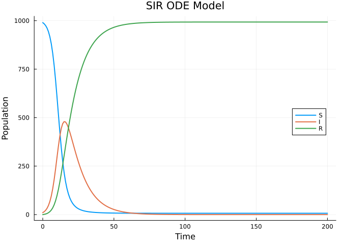
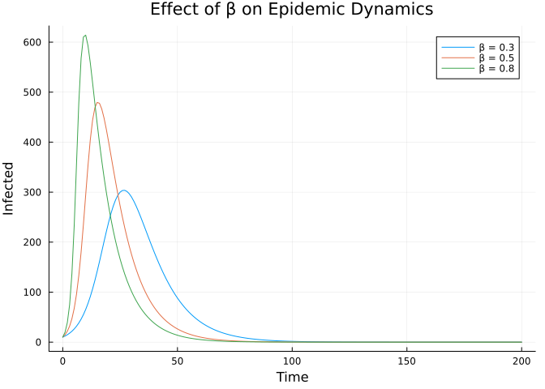

Basic ODE Model: SIR
Introduction
This vignette demonstrates how to define and simulate a basic SIR (Susceptible-Infected-Recovered) ordinary differential equation model using Odin.jl. This is the simplest type of epidemiological model and serves as a foundation for more complex models.
Model Definition
The SIR model is defined by three compartments:
- S: Susceptible individuals
- I: Infected individuals
- R: Recovered individuals
The dynamics are governed by: $\frac{dS}{dt} = -\beta \frac{SI}{N}, \quad \frac{dI}{dt} = \beta \frac{SI}{N} - \gamma I, \quad \frac{dR}{dt} = \gamma I$
using Odin
using Plots
sir = @odin begin
deriv(S) = -beta * S * I / N
deriv(I) = beta * S * I / N - gamma * I
deriv(R) = gamma * I
initial(S) = N - I0
initial(I) = I0
initial(R) = 0
beta = parameter(0.5)
gamma = parameter(0.1)
I0 = parameter(10)
N = parameter(1000)
endOdin.DustSystemGenerator{var"##OdinModel#277"}(var"##OdinModel#277"(3, [:S, :I, :R], [:beta, :gamma, :I0, :N], true, false, false, false, false, Dict{Symbol, Array}()))Simulation
We simulate the model over 200 time units:
pars = (beta=0.5, gamma=0.1, I0=10.0, N=1000.0)
times = collect(0.0:1.0:200.0)
result = simulate(sir, pars; times=times)3×1×201 Array{Float64, 3}:
[:, :, 1] =
990.0
10.0
0.0
[:, :, 2] =
983.9514671058577
14.822858947797766
1.225673946344605
[:, :, 3] =
975.0700813431112
21.89079945474258
3.039119202146267
;;; …
[:, :, 199] =
6.904891373342699
1.6627206571164893e-5
993.0950919994507
[:, :, 200] =
6.904891319299752
1.5115896891841679e-5
993.0950935648035
[:, :, 201] =
6.904891269842633
1.3732829794815729e-5
993.0950949973277The result is a 3D array with dimensions (n_state, n_particles, n_times). Since we have 1 particle, we extract the first (and only) particle:
S = result[1, 1, :]
I = result[2, 1, :]
R = result[3, 1, :]
plot(times, [S I R],
label=["S" "I" "R"],
xlabel="Time", ylabel="Population",
title="SIR ODE Model",
linewidth=2,
legend=:right)
Parameter Exploration
We can explore the effect of different transmission rates:
betas = [0.3, 0.5, 0.8]
p = plot(title="Effect of β on Epidemic Dynamics",
xlabel="Time", ylabel="Infected",
linewidth=2)
for b in betas
pars_b = (beta=b, gamma=0.1, I0=10.0, N=1000.0)
res = simulate(sir, pars_b; times=times)
plot!(p, times, res[2, 1, :], label="β = $b")
end
p
Verification
The total population should be conserved:
total = S .+ I .+ R
println("Population at t=0: ", total[1])
println("Population at t=200: ", total[end])
println("Max deviation: ", maximum(abs.(total .- 1000.0)))Population at t=0: 1000.0
Population at t=200: 1000.0000000000001
Max deviation: 3.410605131648481e-13Final Size
We can compute the final epidemic size (total who were infected):
final_R = R[end]
println("Final epidemic size: ", round(final_R, digits=1), " out of ", Int(pars.N))
println("Attack rate: ", round(100 * final_R / pars.N, digits=1), "%")Final epidemic size: 993.1 out of 1000
Attack rate: 99.3%